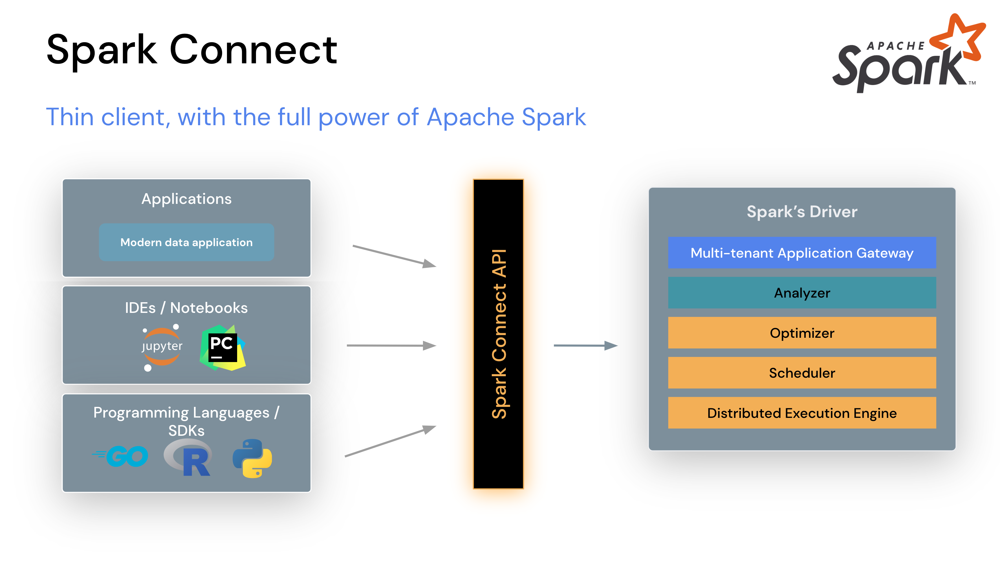
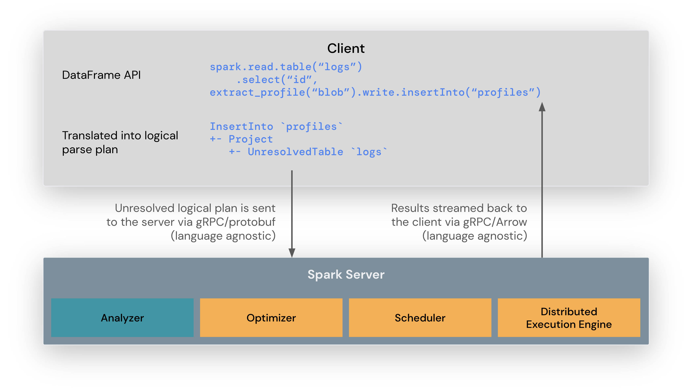

Spark Connect Overview
Building client-side Spark applications
In Apache Spark 3.4, Spark Connect introduced a decoupled client-server architecture that allows remote connectivity to Spark clusters using the DataFrame API and unresolved logical plans as the protocol. The separation between client and server allows Spark and its open ecosystem to be leveraged from everywhere. It can be embedded in modern data applications, in IDEs, Notebooks and programming languages.
To get started, see Quickstart: Spark Connect.

How Spark Connect works
The Spark Connect client library is designed to simplify Spark application development. It is a thin API that can be embedded everywhere: in application servers, IDEs, notebooks, and programming languages. The Spark Connect API builds on Spark’s DataFrame API using unresolved logical plans as a language-agnostic protocol between the client and the Spark driver.
The Spark Connect client translates DataFrame operations into unresolved logical query plans which are encoded using protocol buffers. These are sent to the server using the gRPC framework.
The Spark Connect endpoint embedded on the Spark Server receives and translates unresolved logical plans into Spark’s logical plan operators. This is similar to parsing a SQL query, where attributes and relations are parsed and an initial parse plan is built. From there, the standard Spark execution process kicks in, ensuring that Spark Connect leverages all of Spark’s optimizations and enhancements. Results are streamed back to the client through gRPC as Apache Arrow-encoded row batches.

Operational benefits of Spark Connect
With this new architecture, Spark Connect mitigates several multi-tenant operational issues:
Stability: Applications that use too much memory will now only impact their own environment as they can run in their own processes. Users can define their own dependencies on the client and don’t need to worry about potential conflicts with the Spark driver.
Upgradability: The Spark driver can now seamlessly be upgraded independently of applications, for example to benefit from performance improvements and security fixes. This means applications can be forward-compatible, as long as the server-side RPC definitions are designed to be backwards compatible.
Debuggability and observability: Spark Connect enables interactive debugging during development directly from your favorite IDE. Similarly, applications can be monitored using the application’s framework native metrics and logging libraries.
How to use Spark Connect
Starting with Spark 3.4, Spark Connect is available and supports PySpark and Scala applications. We will walk through how to run an Apache Spark server with Spark Connect and connect to it from a client application using the Spark Connect client library.
Download and start Spark server with Spark Connect
First, download Spark from the Download Apache Spark page. Spark Connect was introduced in Apache Spark version 3.4 so make sure you choose 3.4.0 or newer in the release drop down at the top of the page. Then choose your package type, typically “Pre-built for Apache Hadoop 3.3 and later”, and click the link to download.
Now extract the Spark package you just downloaded on your computer, for example:
tar -xvf spark-3.4.0-bin-hadoop3.tgzIn a terminal window, go to the spark folder in the location where you extracted
Spark before and run the start-connect-server.sh script to start Spark server with
Spark Connect, like in this example:
./sbin/start-connect-server.sh --packages org.apache.spark:spark-connect_2.12:3.4.0Note that we include a Spark Connect package (spark-connect_2.12:3.4.0), when starting
Spark server. This is required to use Spark Connect. Make sure to use the same version
of the package as the Spark version you downloaded previously. In this example,
Spark 3.4.0 with Scala 2.12.
Now Spark server is running and ready to accept Spark Connect sessions from client applications. In the next section we will walk through how to use Spark Connect when writing client applications.
Use Spark Connect in client applications
When creating a Spark session, you can specify that you want to use Spark Connect and there are a few ways to do that outlined as follows.
If you do not use one of the mechanisms outlined here, your Spark session will work just like before, without leveraging Spark Connect, and your application code will run on the Spark driver node.
Set SPARK_REMOTE environment variable
If you set the SPARK_REMOTE environment variable on the client machine where your
Spark client application is running and create a new Spark Session as in the following
example, the session will be a Spark Connect session. With this approach, there is no
code change needed to start using Spark Connect.
In a terminal window, set the SPARK_REMOTE environment variable to point to the
local Spark server you started previously on your computer:
export SPARK_REMOTE="sc://localhost"And start the Spark shell as usual:
./bin/pysparkThe PySpark shell is now connected to Spark using Spark Connect as indicated in the welcome message:
Client connected to the Spark Connect server at localhostAnd if you write your own program, create a Spark session as shown in this example:
from pyspark.sql import SparkSession
spark = SparkSession.builder.getOrCreate()This will create a Spark Connect session from your application by reading the
SPARK_REMOTE environment variable we set previously.
Specify Spark Connect when creating Spark session
You can also specify that you want to use Spark Connect explicitly when you create a Spark session.
For example, you can launch the PySpark shell with Spark Connect as illustrated here.
To launch the PySpark shell with Spark Connect, simply include the remote
parameter and specify the location of your Spark server. We are using localhost
in this example to connect to the local Spark server we started previously:
./bin/pyspark --remote "sc://localhost"And you will notice that the PySpark shell welcome message tells you that you have connected to Spark using Spark Connect:
Client connected to the Spark Connect server at localhostYou can also check the Spark session type. If it includes .connect. you
are using Spark Connect as shown in this example:
SparkSession available as 'spark'.
>>> type(spark)
<class 'pyspark.sql.connect.session.SparkSession'>Now you can run PySpark code in the shell to see Spark Connect in action:
>>> columns = ["id","name"]
>>> data = [(1,"Sarah"),(2,"Maria")]
>>> df = spark.createDataFrame(data).toDF(*columns)
>>> df.show()
+---+-----+
| id| name|
+---+-----+
| 1|Sarah|
| 2|Maria|
+---+-----+Or, when writing your own code, include the remote function with a reference to
your Spark server when you create a Spark session, as in this example:
from pyspark.sql import SparkSession
spark = SparkSession.builder.remote("sc://localhost").getOrCreate()import org.apache.spark.sql.SparkSession
val spark = SparkSession.builder().remote("sc://localhost").build()Client application authentication
While Spark Connect does not have built-in authentication, it is designed to work seamlessly with your existing authentication infrastructure. Its gRPC HTTP/2 interface allows for the use of authenticating proxies, which makes it possible to secure Spark Connect without having to implement authentication logic in Spark directly.
What is supported in Spark 3.4
PySpark: In Spark 3.4, Spark Connect supports most PySpark APIs, including DataFrame, Functions, and Column. However, some APIs such as SparkContext and RDD are not supported. You can check which APIs are currently supported in the API reference documentation. Supported APIs are labeled “Supports Spark Connect” so you can check whether the APIs you are using are available before migrating existing code to Spark Connect.
Scala: In Spark 3.4, Spark Connect supports most Scala APIs, including Dataset, functions, and Column.
Support for more APIs is planned for upcoming Spark releases.